吴语学堂拼音输入方案合集
方案列表
- ℞
NGLI/rime-wugniu_zaonhe：上海吴语wugniu_zaonhe：上海wugniu_zaonhe：上海（老派）wugniu_sonkaon：松江
- ℞
NGLI/rime-wugniu_soutseu：苏州吴语wugniu_soutseu：苏州
- ℞
NGLI/rime-wugniu_kashin：嘉兴吴语（五县两区）wugniu_donshian：桐乡wugniu_haegnin：海宁wugniu_haeye：海盐wugniu_kashin：嘉兴wugniu_kazoe：嘉善
- ℞
NGLI/rime-wugniu_gninpou：宁波吴语wugniu_gninpou：宁波wugniu_gnincieu：鄞州
安装方法
使用
字音查询
https://www.wugniu.com/
鸣谢
联系
吴语学堂：
- QQ群：955201855
- 微信公众号 / 抖音号 / 小红书号：wugniu_com
- 微博：吴语学堂微博
安装方法
安装方法
Windows下安装方法
安装时添加输入方案
-
在浏览器中打开 Rime 输入法的网站 https://rime.im/ ，点击小狼毫的图标下载输入法的安装包。当前版本为 0.15.0。
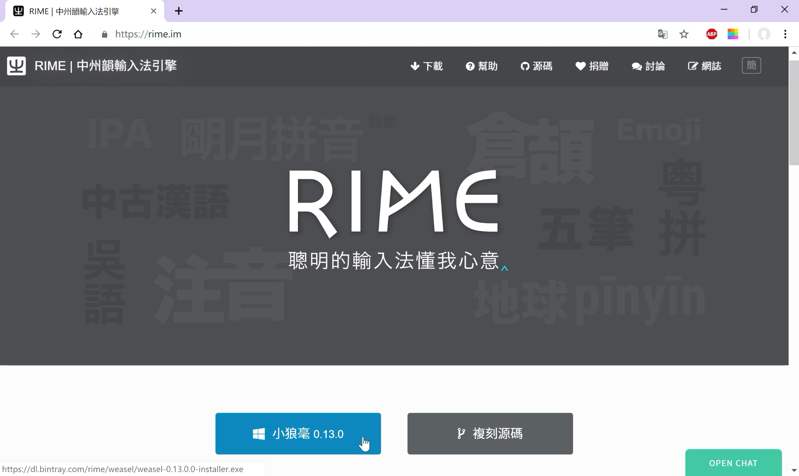
-
下载好安装包之后，双击安装。
如果弹出警告，点开“更多信息”选择“仍要运行”。（以下为安装 0.13.0 及 0.14.3 版时的截图，新版本操作类似）
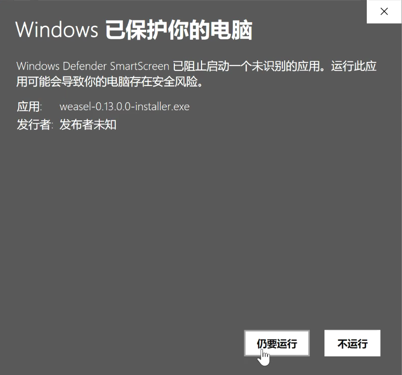
同意许可证，选择安装位置。点击“安装”。
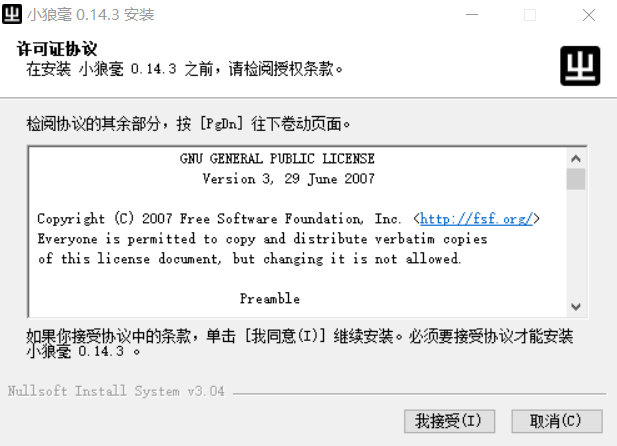
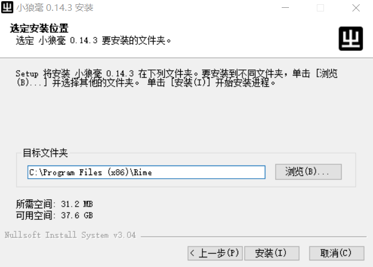
-
如果是第一次安装，安装进行到一半的时候，会弹出“【小狼毫】安裝選項”的界面。这里可以设定将输入法安装到哪种系统语言下，也可以自定义用户文件夹的位置。这里建议使用默认位置，避免给之后安装输入方案带来不必要的麻烦。选择完后点击“安裝”。
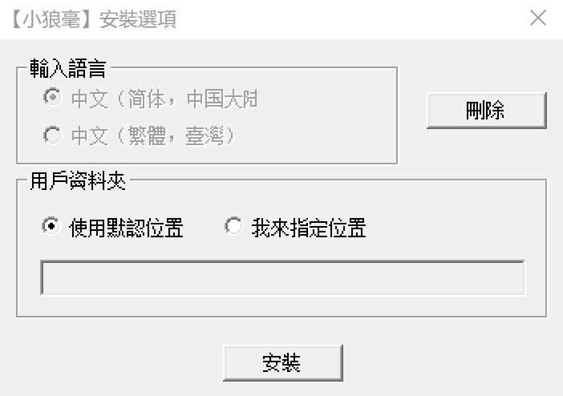
-
稍等一段时间，等到安装程序提示成功。点击“完成”结束安装。
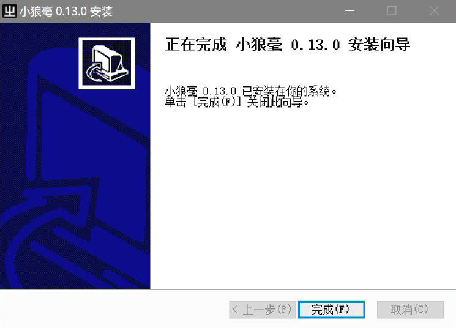
-
点击在任务栏上输入法的图标，选择小狼毫。
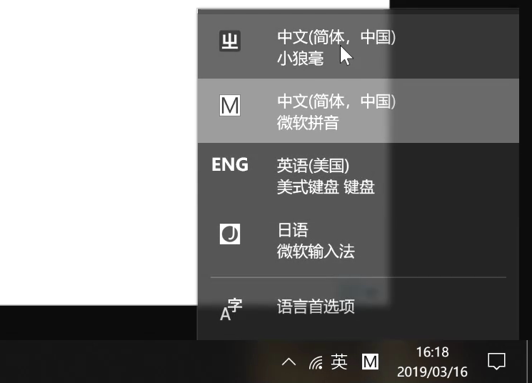
选择好之后，打开任何一个编辑器或输入框，按
F4或Ctrl+`唤出“方案選單”，可以发现选单中已经有了几种输入方案。如果没有更多需求的话，就可以选一种打字了。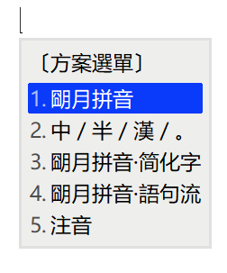
添加输入方案 / 更新输入方案
如果需要添加更多输入方案，可以参照以下步骤。
-
在任务栏 Rime 图标这边右键打开菜单。
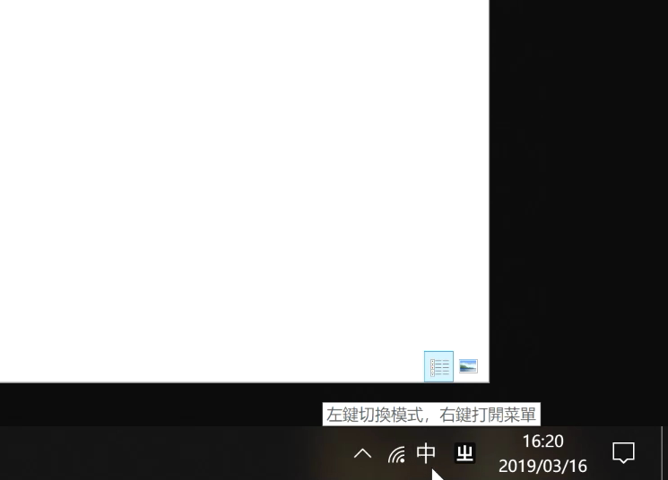
-
打开后选择“輸入法設定”，就能进入“【小狼毫】方案選單設定”的界面。点击下方的“獲取更多輸入法方案…”。
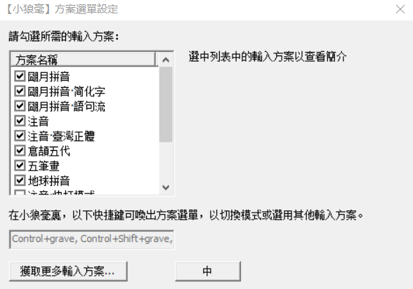
-
点完会弹出一个命令行界面。在这个命令行中输入仓库的地址。仓库地址在输入方案网页的左上角。注意是输入仓库地址，而非输入方案的名称。
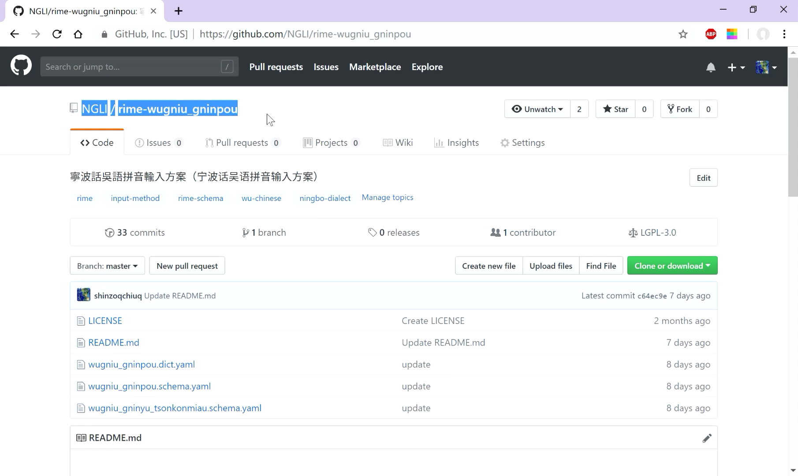
比如要安装宁波话输入方案，就可以输入
NGLI/rime-wugniu_gninpou。输入完按下回车，等待一段时间。

-
等到命令行界面不再变化，就可以关掉命令行界面了。再回到“【小狼毫】方案選單設定”的界面，可以发现输入法选单多了几种输入方案。可以点击输入方案的名字查看输入方案的简介，然后根据个人需要勾选。选完点击“中”。
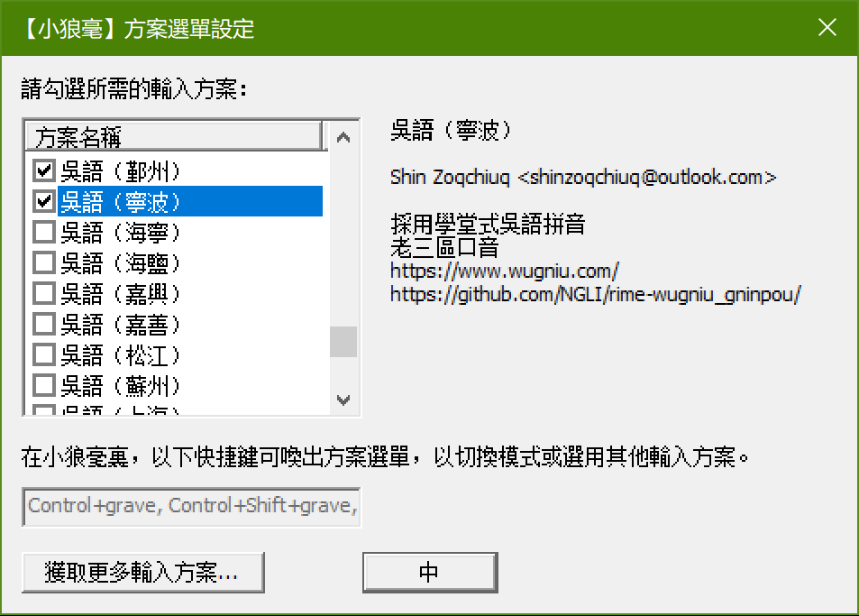
之后是介面風格設定，选择一个自己喜欢的配色即可。选完点击“中”。
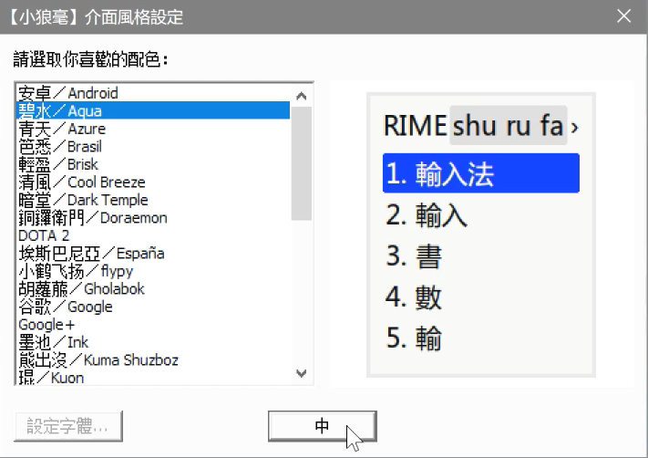
-
完成后，再次右键任务栏 Rime 图标打开菜单，选择“重新部署”。稍等一会儿，待其部署完成即可。
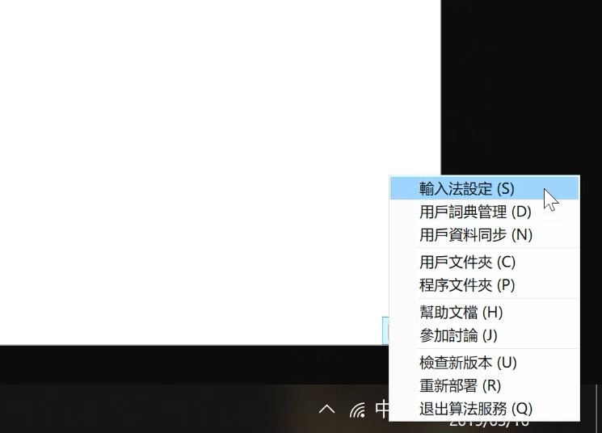
这种方法可以用于添加或更新输入方案。更新输入方案时，有可能出现更新失败的情形。可以到用户文件夹下，将已有的输入方案文件删除。再试着重新安装一遍输入方案。
-
安装完输入方案后，打开任何一个编辑器或输入框，按
F4或Ctrl+`唤出“方案選單”，从选单中选择想要的输入方案。开始打字。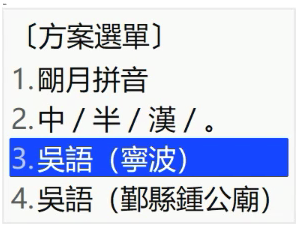
视频教程：
以下两个视频教程是以版本 0.13.0 为例讲解的，与当前版本的安装方法有差异，仅供参考。
https://www.bilibili.com/video/BV1db411S7gf
https://www.bilibili.com/video/BV1qb411L7xt
有需要的话，也可以参阅 Rime 输入法的 文档。
macOS下安装方法
方法一
-
安装 Rime 输入法。安装和使用方法见 Rime 输入法的网站 https://rime.im/ 。
-
点击下方链接，下载输入方案文件。
-
点击 此处 下载压缩包，解压后可得配置文件
default.custom.yaml。将上一步下载的输入方案文件和这一步下载的配置文件放到Rime的用户文件夹（~/Library/Rime/，可以通过点击输入方案状态栏上的Rime图标，选择“用户设定…”来打开）。 -
打开配置文件
default.custom.yaml，应当显示为如下内容。patch: schema_list: - schema: wugniu_zaonhe # 上海 - schema: wugniu_zaonhe_laupha # 上海（老派） - schema: wugniu_sonkaon # 松江 - schema: wugniu_soutseu # 苏州 - schema: wugniu_donshian # 桐乡 - schema: wugniu_haegnin # 海宁 - schema: wugniu_haeye # 海盐 - schema: wugniu_kashin # 嘉兴 - schema: wugniu_kazoe # 嘉善 - schema: wugniu_gninpou # 宁波 - schema: wugniu_gnincieu # 鄞州-schema:后面跟输入方案的名称。不需要某种输入方案，就将那一行删去。如果需要更多的输入方案，也可以自行在列表中修改添加。具体可以参照Rime官方的 教程。 -
在输入法状态栏上点击“重新部署”。等待一段时间。
-
按
F4或Ctrl+`，从选单中选择想要的输入方案。
方法二
-
安装 Rime 输入法。安装和使用方法见 Rime 输入法的网站 https://rime.im/ 。
-
curl -fsSL https://raw.githubusercontent.com/rime/plum/master/rime-install | bash -
以安装宁波话输入方案为例，运行以下命令，下载输入方案码表。
cd plum bash rime-install NGLI/rime-wugniu_gninpou要安装其他输入方案，只需将
NGLI/rime-wugniu_gninpou替换为仓库地址就可以了。注意是仓库地址不是输入方案的方案名称。 -
点击 此处 下载压缩包，解压后可得配置文件
default.custom.yaml，将它放到Rime的用户文件夹（~/Library/Rime/，可以通过点击Rime图标选择“用户设定…”来打开）内。打开文件，应当显示为如下内容。patch: schema_list: - schema: wugniu_zaonhe # 上海 - schema: wugniu_zaonhe_laupha # 上海（老派） - schema: wugniu_sonkaon # 松江 - schema: wugniu_soutseu # 苏州 - schema: wugniu_donshian # 桐乡 - schema: wugniu_haegnin # 海宁 - schema: wugniu_haeye # 海盐 - schema: wugniu_kashin # 嘉兴 - schema: wugniu_kazoe # 嘉善 - schema: wugniu_gninpou # 宁波 - schema: wugniu_gnincieu # 鄞州-schema:后面跟输入方案的名称。不需要某种输入方案，就将那一行删去。如果需要更多的输入方案，也可以自行在列表中修改添加。具体可以参照Rime官方的 教程。 -
在输入法状态栏上点击“重新部署”。等待一段时间。
-
按
F4或Ctrl+`，从选单中选择想要的输入方案。
有需要的话，也可以参阅 Rime 输入法的 文档。
Linux下安装方法
方法一
-
安装 Rime 输入法。安装和使用方法见 Rime 输入法的网站 https://rime.im/ 。
-
curl -fsSL https://raw.githubusercontent.com/rime/plum/master/rime-install | bash -
以安装宁波话输入方案为例，运行以下命令，下载输入方案码表。
cd plum bash rime-install NGLI/rime-wugniu_gninpou要安装其他输入方案，只需将
NGLI/rime-wugniu_gninpou替换为仓库地址就可以了。注意是仓库地址不是输入方案的方案名称。 -
点击 此处 下载压缩包，解压后可得配置文件
default.custom.yaml，将它放到 Rime 的用户文件夹（~/.config/ibus/rime/）内。打开文件，应当显示为如下内容。patch: schema_list: - schema: wugniu_zaonhe # 上海 - schema: wugniu_zaonhe_laupha # 上海（老派） - schema: wugniu_sonkaon # 松江 - schema: wugniu_soutseu # 苏州 - schema: wugniu_donshian # 桐乡 - schema: wugniu_haegnin # 海宁 - schema: wugniu_haeye # 海盐 - schema: wugniu_kashin # 嘉兴 - schema: wugniu_kazoe # 嘉善 - schema: wugniu_gninpou # 宁波 - schema: wugniu_gnincieu # 鄞州-schema:后面跟输入方案的名称。不需要某种输入方案，就将那一行删去，只保留需要的。如果需要更多的输入方案，也可以自行在列表中修改添加。具体可以参照Rime官方的 教程。 -
在输入法状态栏上点击“部署”。等待一段时间。
-
按
F4或Ctrl+`，从选单中选择想要的输入方案。
方法二
-
安装Rime输入法。安装和使用方法见 Rime 输入法的网站 https://rime.im/ 。
-
点击下方链接，下载输入方案文件。
-
点击 此处 下载压缩包，解压后可得配置文件
default.custom.yaml，将上一步下载的输入方案文件和这一步下载的配置文件放到 Rime 的用户文件夹（~/.config/ibus/rime/）内。 -
打开配置文件
default.custom.yaml，应当显示为如下内容。patch: schema_list: - schema: wugniu_zaonhe # 上海 - schema: wugniu_zaonhe_laupha # 上海（老派） - schema: wugniu_sonkaon # 松江 - schema: wugniu_soutseu # 苏州 - schema: wugniu_donshian # 桐乡 - schema: wugniu_haegnin # 海宁 - schema: wugniu_haeye # 海盐 - schema: wugniu_kashin # 嘉兴 - schema: wugniu_kazoe # 嘉善 - schema: wugniu_gninpou # 宁波 - schema: wugniu_gnincieu # 鄞州-schema:后面跟输入方案的名称。不需要某种输入方案，就将那一行删去。如果需要更多的输入方案，也可以自行在列表中修改添加。具体可以参照Rime官方的 教程。 -
在输入法状态栏上点击“部署”。等待一段时间。
-
按
F4或Ctrl+`，从选单中选择想要的输入方案。
有需要的话，也可以参阅 Rime 输入法的 文档。
Android
安卓平台下，有两个输入法应用可供选择，分别是 同文输入法（Trime） 和 小企鹅输入法（fcitx5-android）。在安装前，先要下载一些文件。
-
点击下方链接，下载输入方案文件。
-
解压下载好的压缩包，找到以
.yaml结尾的输入方案文件。
同文输入法
-
安装同文输入法。具体可以参照 Trime 的 网站。
-
安装好之后，打开同文输入法，按界面指引启用输入法。
-
输入方案需要基础配置文件和基础词表，同时也依赖朙月拼音和五筆畫实现反查。点击下方链接下载。
-
解压前面下载好的几个压缩包，找到所有以
.yaml和.txt结尾的文件，将它们放到安卓设备的/sdcard/rime文件夹（主目录下的rime文件夹）。 -
放好后，再次打开同文输入法。点右上角“🔄”图标，等待一段时间后，再选择“方案”，点右下角的“+”号，根据自己的需要添加输入方案。
-
到打字界面，长按输入法左下角的“
中文 ”，在列表中选择输入法。
有需要的话，也可以参阅 Trime 输入法的 文档。
小企鹅输入法
-
安装好之后，打开小企鹅输入法，按界面指引启用输入法。
-
在输入法界面，点“输入法”，再点按右下角的加号，添加“中州韵”。
-
点击 此处 下载压缩包，解压后可得配置文件
default.custom.yaml。打开文件，应当显示为如下内容。patch: schema_list: - schema: wugniu_zaonhe # 上海 - schema: wugniu_zaonhe_laupha # 上海（老派） - schema: wugniu_sonkaon # 松江 - schema: wugniu_soutseu # 苏州 - schema: wugniu_donshian # 桐乡 - schema: wugniu_haegnin # 海宁 - schema: wugniu_haeye # 海盐 - schema: wugniu_kashin # 嘉兴 - schema: wugniu_kazoe # 嘉善 - schema: wugniu_gninpou # 宁波 - schema: wugniu_gnincieu # 鄞州-schema:后面跟输入方案的名称。不需要某种输入方案，就将那一行删去，只保留需要的。如果需要更多的输入方案，也可以自行在列表中修改添加。具体可以参照 Rime 官方的 教程。 -
将之前下载的所有以
.yaml结尾的文件，将它们放到安卓设备的/sdcard/Android/data/org.fcitx.fcitx5.android/files/data/rime文件夹（主目录下的Android/data/org.fcitx.fcitx5.android/files/data/rime文件夹）。 -
到打字界面，按键盘下方地球图标，切换到中州韵。点按左上角“>”号，展开选单，点击“…”，点按“<>”图标切换输入方案。
有需要的话，也可以查看小企鹅输入法的 网站。
iOS
iOS 平台下，有两个输入法应用可供选择，分别是「仓」输入法 和 iRime 输入法。在安装前，先要在电脑上完成一些准备工作。
-
点击下方链接，下载输入方案文件。
-
解压下载好的压缩包，找到以
.yaml结尾的输入方案文件。 -
点击 此处 下载压缩包，解压后可得配置文件
default.custom.yaml。打开文件，应当显示为如下内容。patch: schema_list: - schema: wugniu_zaonhe # 上海 - schema: wugniu_zaonhe_laupha # 上海（老派） - schema: wugniu_sonkaon # 松江 - schema: wugniu_soutseu # 苏州 - schema: wugniu_donshian # 桐乡 - schema: wugniu_haegnin # 海宁 - schema: wugniu_haeye # 海盐 - schema: wugniu_kashin # 嘉兴 - schema: wugniu_kazoe # 嘉善 - schema: wugniu_gninpou # 宁波 - schema: wugniu_gnincieu # 鄞州-schema:后面跟输入方案的名称。不需要某种输入方案，就将那一行删去，只保留需要的。如果需要更多的输入方案，也可以自行在列表中修改添加。具体可以参照 Rime 官方的 教程。
「仓」输入法
-
在苹果应用商店下载安装「仓」输入法。
-
确保电脑和 iOS 设备处在同一个 WiFi 下。在 iOS 设备上点击「仓」输入法的图标，选择「输入方案上传」>「启动服务」。按照说明在电脑浏览器上输入 iOS 设备上显示的网址。
-
打开网址后，双击打开
Rime文件夹，点击上传按钮或通过拖拽，将刚才解压得到的输入方案文件以及default.custom.yaml上传上去。 -
关闭网页，并在 iOS 设备上点击「停止服务」。在 iOS 设备上选择「RIME」>「重新部署」，等部署完成后，再点击「输入方案设置」，根据自己的需要勾选输入方案。
-
在 iOS 的「设置」中，选择「通用」>「键盘」，点击「添加新键盘」，将「仓」输入法添加到键盘中。
-
到打字界面，点击键盘图标，在选单中选择输入方案。
iRime 输入法
-
在苹果应用商店下载安装 iRime 输入法。
-
确保电脑和 iOS 设备处在同一个 WiFi 下。在 iOS 设备上点击 iRime 的图标，选择“电脑快传”。按照说明在电脑浏览器上输入 iOS 设备上显示的网址。
-
打开网址后，在列表内找到
default.custom.yaml点击垃圾桶按钮将它删掉。再点击“上传文件”，将刚才解压得到的输入方案文件以及default.custom.yaml上传上去。 -
退出 iOS 设备上“电脑快传”的页面，先点击“部署”，等部署完成后，再点击“选择方案”，根据自己的需要勾选输入方案。
-
在 iOS 的「设置」中，选择「通用」>「键盘」，点击「添加新键盘」，将「iRime 输入法」添加到键盘中。
-
到打字界面，点击键盘图标，在选单中选择输入方案。
使用
使用
模糊音
有几个输入法默认开启了一些模糊音设置。如果使用者想要手动调整模糊音，可以点击 此处 下载模糊音定制模板。解压后找到对应地区的 .custom.yaml 结尾的文件。用记事本或其他文本编辑器打开它。
比如在 wugniu_gninpou.custom.yaml 里提供了「削 ≈ 吸」这一模糊音，若想要关闭这一模糊音，只需在下面两行代码的前面加上 # 号。
- derive/ia(?=q|h)/i/
- derive/ya(?=q|h)/yi/
又如 wugniu_gninpou.custom.yaml 文件中还提供了「胡 ≈ 符」这一模糊音，但默认处于关闭状态。只需删去下面这行代码前的 # 号，就可以开启这一设置。
#- derive/wu$/vu/
需要注意的是 YAML 格式的文件使用缩进来表示层级关系。所以在定制模糊音时要注意不要把行首的空格也删去了。
文件中每一类模糊音设置前都有文字说明，只要对照这些说明增删 # 号就行。
另外还有一些容错设置，允许用户把 au 打成 ao ，把 ao 打成 oa 等。这些容错设置也是默认开启的。
文件中还提供了转换为 协会式拼音 的选项。只需删去所有「轉爲吳語協會式拼音」和「顯示吳語協會式拼音」小节下的 # 号即可。
更改完后，记得保存。保存好之后，将文件放到 Rime 输入法的用户文件夹中。Windows 系统下用户文件夹的位置在 %APPDATA%\Rime，Mac OS 下是 ~/Library/Rime，Linux 下是 ~/.config/ibus/rime。Windows 下也可以通过右键任务栏上的 Rime 图标来找到用户文件夹。
将文件放入用户文件夹之后，右键 Rime 图标点击“重新部署”。稍等一会儿就能生效了。
更多定制方法，请参照 Rime 的 定制指南。
如果用户会正则表达式，也可以参照 Rime 网站上 有关拼写运算的文档，自己定制模糊音甚至拼音方案。
输入提示
在输入时输入法会有输入提示。提示使用者选项中每个字的读音。
因为使用者在打字时并不需要输入声调，所以输入提示默认是不显示声调的。但如果使用者出于学习或其他目的，想要在打字时知道这些字的单字调，以下几种输入方案提供了这一功能。
wugniu_soutseu：苏州wugniu_haeye：海盐wugniu_kashin：嘉兴wugniu_kazoe：嘉善
如果使用者需要，可以点击 此处 下载模糊音定制模板。解压后找到对应地区的 .custom.yaml 结尾的文件。用记事本或其他文本编辑器打开它。
模糊音模板文件内，找到去「輸入提示設置」这一节，删去这一节下面这几行代码前的 # 号
#- xform/( .+)\d/$1/
#- xform/\d(.+?)(?=\b)/$1/
#- xlit/12345678/¹²³⁴⁵⁶⁷⁸/
同时在下面这行前面加上 # 号
- xform/\d//
更改完后，记得保存。保存好之后，将文件放到 Rime 输入法的用户文件夹中。Windows 系统下用户文件夹的位置在 %APPDATA%\Rime，Mac OS 下是 ~/Library/Rime，Linux 下是 ~/.config/ibus/rime。Windows 下也可以通过右键任务栏上的 Rime 图标来找到用户文件夹。
将文件放入用户文件夹之后，右键 Rime 图标点击“重新部署”。稍等一会儿就能生效了。
更多定制方法，请参照 Rime 的 定制指南。
反查
如果不确定某个字在当地方言里的读音。吴语学堂的这些输入方案提供了两种形式的反查。一种是通过普通话反查，还有一种是通过笔画反查。按下 ` 键，键入完整的汉语拼音，就能通过汉语拼音反查字音。同样按下 ` 键，键入 hspnz 就能通过笔画反查字音，这里的 hspnz 分别代表 一丨丿丶乙 这五种基本笔画。
比如使用宁波话输入法，想查找“山”字在宁波话中的读音。就可以按下 ` 键，键入 shan ，或是键入 szs 。
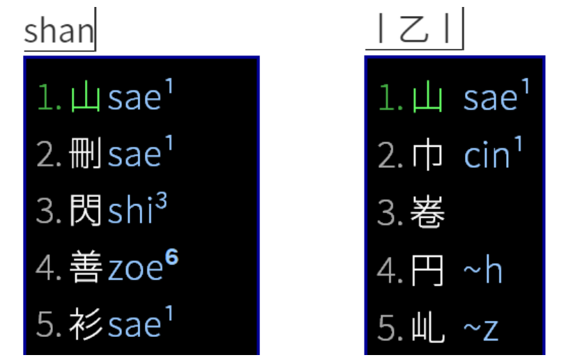
⚠️ 汉语拼音反查功能依赖“朙月拼音”，如果使用者对“朙月拼音”方案做了定制或修改，可能会影响反查功能。解决方案见 修改反查词典 一节。
反查主要是为了让使用者确定某个字的拼写，所以反查不显示声调。但以下这几种输入方案可以开启声调显示。
wugniu_soutseu：苏州wugniu_haeye：海盐wugniu_kashin：嘉兴wugniu_kazoe：嘉善
如果使用者需要，可以点击 此处 下载模糊音定制模板。解压后找到对应地区的 .custom.yaml 结尾的文件。用记事本或其他文本编辑器打开它。
模糊音模板文件内，会有「反查標註設置」这一节。想要开启声调显示，可以删去这一小节下这行代码前的 # 号
#- xlit/12345678/¹²³⁴⁵⁶⁷⁸/
同时在下面这行前面加上 # 号
- xform/\d//
更改完后，记得保存。保存好之后，将文件放到 Rime 输入法的用户文件夹中。Windows 系统下用户文件夹的位置在 %APPDATA%\Rime，Mac OS 下是 ~/Library/Rime，Linux 下是 ~/.config/ibus/rime。Windows 下也可以通过右键任务栏上的 Rime 图标来找到用户文件夹。
将文件放入用户文件夹之后，右键 Rime 图标点击“重新部署”。稍等一会儿就能生效了。
修改反查词典
一些常见的“朙月拼音”词库扩充方案会将“朙月拼音”默认的词典文件改为 luna_pinyin.extended.dict.yaml，导致吴语输入方案的汉语拼音反查功能失效[1, 2]。使用者可以点击 此处 下载定制模板。解压后找到对应地区的 .custom.yaml 结尾的文件。用记事本或其他文本编辑器打开它，并在文件中找到「反查詞典設置」这一节，删去下这行代码前的 # 号即可。
#"luna_pinyin/dictionary": luna_pinyin.extended
更多定制方法，请参照 Rime 的 定制指南。
自定义短语
吴语学堂的这些输入方案支持用户自定义短语。
使用者可以在用户文件夹内新建名为 custom_phrase.txt 的文件，在文件中添加自定义的短语。
自定义短语的格式为短语、拼音、字频，三者用 tab 键分隔。示例如下。
吳語 wu gniu 100
一些文本编辑器会将 tab 键转换成空格，导致自定义短语无法生效。若出现这种情况，请检查编辑器的设置，确保三者之间使用 tab 键分隔。